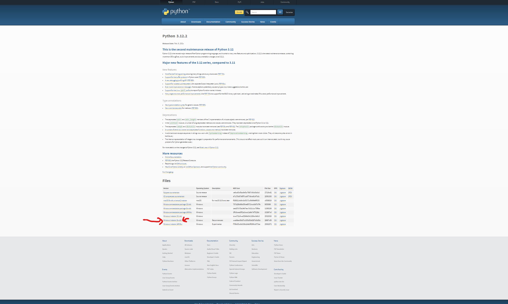

安装
1.点击去官网下载
2.点击Downloads
3.选择你电脑的系统
4.点击第一个就行，下面的是以前的版本
5.滑到最下面，选择符合你电脑位数的可执行程序（.exe）即installer
6.网页自带下载可能很慢，可以下载迅雷然后下载。
7.勾选add python to path（自动给你添加环境变量）
8.选择自定义安装（customize installation）

9.全部勾选，点击next

Python 是一种解释型、面向对象、动态数据类型的高级程序设计语言。
Python 由 Guido van Rossum 于 1989 年底发明，第一个公开发行版发行于 1991 年。
像 Perl 语言一样, Python 源代码同样遵循 GPL(GNU General Public License) 协议。
Python大小写敏感吗：
区分
基本语法和数据类型
# 单行注释以‘#’开头
变量是一个很有意思的东西，从字面意思上就可以看出来了
就是一个可以变化的量，它类似你的名字
理解这一点很重要，你的名字是可以在某种程度上代替你
但是终究不是你本身，它只是你这个人的代名词
我们要找你，知道你的名字就可以
变量也是这样，变量可以体现一个量的存在
但是它终究不是量本身，其次变量是很花心的
它可以随意的去更换来体现任何的量
例如下面的代码：
x = 5 #这就把5这个常数赋给了变量x，x就是5的代名词
x = 10 #现在更改了x的值为10，使得x指向了常数10，就不再指向5了
x = 5 #整数
x = 3.1415 #浮点数
x = '你好，世界' #字符串,python中既可以用双引号“”也可以用单引号‘’来表示字符串
a = 5
b = 2
加法 = a + b #在python中是可以使用中文来作为变量名的，不建议，推荐使用Sum英文
减法 = a - b
乘法 = a * b
除法 = a / b
优先级和我们学的数学一样，可以使用（）来调整优先级
=========================================
字符串的拼接是使用’+‘，没错就是加号
a = ’我是‘
b = ’人类‘
c = a + b #此时c的值是’我是人类‘
=========================================
比较运算（大小）
a = 5
b = 2
a == b #首先这是一个式子整体是有值的（返回真true或假false），其次这句话是判断a是否等于b
a > b #a是否大于b
a < b #a是否小于b
a >= b #a是否大于等于b
a <= b #a是否小于等于b
a != b #a是否不等于b
笨蛋，你当然可以将整体的式子的值赋给一个变量啊
c = a == b #赋值运算符’=‘ 优先级在所有的里面都是最低的（印象里面是这样）
控制流
if语句
x = 10
if x > 5:
print("x是大于5的")
#忘记说了，python和其他的语言不一样，没有块符号，没有语句结束符号（换行结束）
#一切都是格式来决定代码块，print在if后面，代表print是if语句块中的语句
if-else语句
if x > 5:
print(...)
else if x == 5:
print(...)
else:
print(...)
===================================================
循环结构
for语句
a = [1,2,3,4,5,6,7]
for b in a:
print(b)
#这个有点难以理解确实，C语言在这方面做的就不错
#首先我们定义了一个类似于数组的东西
#我们让b在a这个数组中以此找值来赋给b实现循环
#最后我们再打印b
----------------------------------------------------
while语句
a = 0
while a < 5:
print(a)
a += 1
#while循环是“直到”的意思
#应该注意到，a是条件是需要更新的，不然这个循环是无限循环下去
----------------------------------------------------
break 是结束当前块
continue 是结束本次循环（后面都不执行），开启下一次新的
给你看一段代码：
for i in range(10):
if i == 5:
break;
print(i)
#range是一个迭代(遍历)一个范围内的数字，就是0-9，不包括10，因为10是一个量数
#别误解，我说的量数就是字面意思，10个的意思
#是的，你如果聪明点，就会想到一个范围，什么范围？
#我能不能range(10,16)，哈哈当然可以，这就是从10开始到15，不包括16
#其次看break，它缩进在if后面，结束的是if？
#nonono，break(绝大部分)只能用于循环结构，if是判断
#所以break退出的是for循环
#如果此处的是continue，那么循环块中后面的所有代码都不执行
#重新开启下一轮循环
列表与元组
============================================
创建列表
list = [1,2,3,4,5]
列表是python中最常用的数据结构之一，存储有序的元素
列表可变，可以随时增删改查
列表是包容万象的，数据不一定是同一种类型（和C是区别很大的）
--------------------------------------------
增加元素（使用append()方法）
list.append(19) #在列表最后增加一个值为19的元素
--------------------------------------------
删除元素（使用remove()方法）
list.remove(19) #删除列表中值为19的元素
#当然了，如果列表中存在多个值为19的，只会删除第一个
当然也可以使用索引来删除
del list[5] #删除索引为5的元素
--------------------------------------------
修改元素（通过索引修改）
list[5] = 10 #修改下标为5的元素的值为10
--------------------------------------------
查找元素（通过索引）
value = list[5] #找到下标为5的元素的值赋给value
============================================
python中有个重要的东西叫做“切片”
就是可以获取列表一部分的值
list[1:4] #获取的是下标为2，3的值，是不包括两头的
其次还有许多的方法
len() #获取列表长度
max() #获取列表中的最大值
min() #获取列表中的最小值
index() #获取指定值的索引，这个有点难以理解
#简单的说就是list.index(3) 返回的是第一个值为3的下标
============================================
基本上元组和列表是一样的
唯一一点也就是最大的区别就是
元组一旦创建不可修改
其次元组的创建是“()”而不是“[]”
tuple = (1,2,3,4,5,6) #一旦创建只可访问
============================================
函数和模块
函数，这个词在数学中也经常看见
在编程里面也有异曲同工之妙
我们在面向对象的语言中也听过方法这个词（没听过也不要紧）
都有一个共同的特点就是：
一次定义，多次重用
==============================================
def function(参数1，参数2...):
函数体
return 返回值
==============================================
#在这里我主要说几点
#1，python中使用缩进来规定语法格式
#2.参数，就是类似数学中的f(x)中的x，x是传给函数，函数用来运算的基本数
#3.函数体，这就是我们之前学习的各种语句，根据需求都可以放进来
#4.return 返回值，类似数学中的f(x)，f(x)本身就是y，也有值，我们也需要运算的结果是吧
这里讲述两个概念
1.默认返回值
你使用return就是纯粹返回一个值
但是有一天，你就是不返回，那么默认返回None
None不知道什么东西？我也不知道，看起来就是“没有”
2.默认参数
编程讲究的就是个优雅
你写数学的时候f(x)，x的值你不给，我拿命给你算y
但是编程里面就不一样了，你可以设置默认的x
即便是某些可爱的用户不给你x让你算y，你也可以魔法打败魔法
def function(a = 5，b = 10)
return a + b
模块这个东西，其实你能从字面意思上了解出一点点东西
一块草莓蛋糕，你可以划分为好几块
一块蓝莓蛋糕，你同样可以划分为好几块
一块不甜的榴莲你同样可以划分好几块
好！我就是奇奇怪怪的
我用一小块草莓蛋糕，一小块蓝莓蛋糕
以及一小块榴莲蛋糕合起来组成一个新的蛋糕
我称为水果蛋糕，为了更有卖点
我称为《超级无敌爆炫果果大蛋糕》
=========================================
其实现代编程也是如此
我或许根本就不会做蛋糕
但是我可以买回来，重新一摆弄
就新成了新的蛋糕，显得我也可以作蛋糕
------------------------------------------
在编程里面，库就是草莓蛋糕，模块就是一小块草莓蛋糕
------------------------------------------
==========================================
导入模块
import XXX
这就导入了一个XXX模块 #XXX是我举例的，别傻乎乎的用了
导入数学模块就是
import math
==========================================
使用模块中的功能 （说白了也就是模块里面的函数/方法）
import math
result = math.sqrt(16) # 计算平方根
print(result) # 输出: 4.0
===========================================
别名（Alias）
简化代码，python有一种方案，类似math简化为m
import math as m
result = m.sqrt(16) # 计算平方根
print(result) # 输出: 4.0
===========================================
导入特定的函数/方法
import就像C里面的include，说白了就是把无数的代码粘贴在了这里
有时候就是像只用sqrt这个方法，其他就不导进来
from math import sqrt
result = sqrt(9)
print(result)
#python和sql语法都是很偏向英语人的语法
#像from math（别打成form，“表格”的意思）就是来自数学模块
#import sqrt 就是导入sqrt方法
--------------------------------------------
那我就要问了，我怎么知道这个模块里面有什么方法啊
对于这个问题有两个解决方案
1.官方有API（接口）文档
2.使用python来查看
import math
print(dir(math)) #dir就是英文“目录”的意思
===========================================
使用第三方库
python有标准库就是你下载python会自带一起下
还有一些就是别人开发的，类似
steam的工坊，就是插件
import requests
response = requests.get("https://.....")
这就是导入标准库的requests库，执行拉取特定网页链接中的第三方库资源